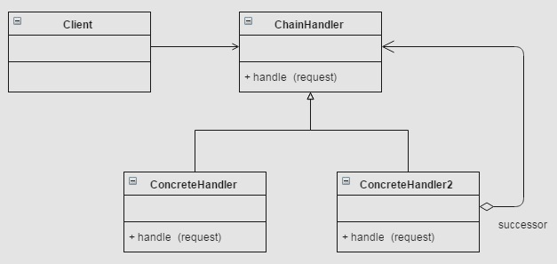

Chain of Responsibility Pattern by Juicyroach
Posted on May 27, 2015 at 12:00 PM

● 目地 : 當有一待處理物件想經過一系列不同的處理物件，能有一個低耦合且完善的方法
● 使用時機 : 驗證欄位是否有填寫，或是一連串檢驗認證等...
● 想法 : 每個處理物件都握有自己能不能處理與自己處理的方式，當不能處理時就將責任丟至下一個處理物件
● UML :
● 程式與解說 :
首先要先建立處理事情的物件，由於對client來說，他們應該都是相同的物件，因此我們需要一個對外的interface。(這邊以String代表待處理的物件)
public interface ChainHandler {
public void setSuccessor(ChainHandler handler);
public void handle(String input);
}
接著我們要實作處理物件，內容應該包含 1. 設定下個處理物件方法 2.開始處理物件方法
由於下個處理物件方法通常都相同，我習慣抽一層Abstract來處理
public abstract class WordAbstractHandler implements ChainHandler {
private ChainHandler successor;
public void setSuccessor(ChainHandler handler) {
this.successor = handler;
}
public void handle(String input) {
if (canHandle(input)) {
doHandle(input);
return;
}
if (successor != null) {
successor.handle(input);
}
}
public abstract boolean canHandle(String input);
public abstract void doHandle(String input);
}
對於處理的方式，我習慣做一個判定是否由此處理物件處理的canHandle方法、實際做事情doHandle方法，並讓真正實體的處理物件實作
因此當可以實作時才做，做完就不再繼續後面的處理物件了! (若希望後續能繼續做，只要將上圖第11行的return拿掉)
接著是將實際的處理物件做出
public class NumberHandler extends WordAbstractHandler {
@Override
public boolean canHandle(String input) {
return NumberUtils.isNumber(input);
}
@Override
public void doHandle(String input) {
System.out.println("is number, do some thing");
}
}
public class AlphabetHandler extends WordAbstractHandler {
@Override
public boolean canHandle(String input) {
Pattern pattern = Pattern.compile("^[a-zA-Z]*");
Matcher matcher = pattern.matcher(input);
return matcher.matches();
}
@Override
public void doHandle(String input) {
System.out.println("start with english, do some thing");
}
}
對client來說，只要拿取chain的第一個物件並做handle即可，並不需要知道內部的任何行為。
public class Client {
public static void main(String[] args) {
ChainHandler numberHandler = new NumberHandler();
ChainHandler alphabetHandler = new AlphabetHandler();
ChainHandler otherHandler = new OtherHandler();
numberHandler.setSuccessor(alphabetHandler);
alphabetHandler.setSuccessor(otherHandler);
numberHandler.handle("ya");
numberHandler.handle("123");
numberHandler.handle("?");
}
}
P.S 通常Chain的誕生會使用Factory的方式配合properties檔案設定，這樣能讓程式抽換更為方便乾淨
以上是我習慣用的方式，chain還有多種變型體，例如事情做一半後丟後下一個繼續做的不純方式等等，但觀念上都是一致的，端看使用的方法。